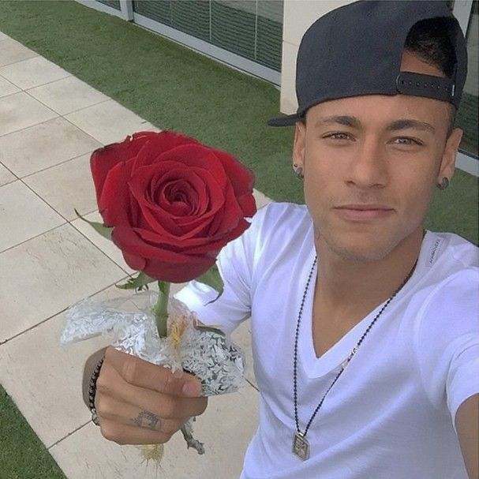

O sorriso inconfundível
Não importa o momento — o sorriso é sempre genuíno.
Além dos gols, dos dribles e dos títulos — o cara que dança, ri, chora e inspira.
ExplorarFora das quatro linhas, Neymar Jr. é daqueles caras que iluminam qualquer ambiente que entra. Não tenta ser perfeito — e talvez seja exatamente isso que faz tanta gente se identificar tanto com ele.
Não é pose. Em treinos, câmeras escondidas, vestiários — Neymar é o primeiro a fazer graça e o último a parar de rir.
O Pai Neymar, a Rafaella, o Davi Lucca, a Mavie — ele nunca escondeu o quanto os seus são sua base e sua motivação.
Dança depois do gol, manda áudio de WhatsApp, faz live no meio da madrugada. Sem filtro, sem roteiro — só ele mesmo.
O mesmo cara que dribla três zagueiros também sente cada falta no corpo, torce pelo amigo e celebra como se fosse a última vez.
"Ele decide o jogo grande… mas também faz piada no vestiário. Dribla o zagueiro e dança depois do gol. É o cara mais humano que o futebol produziu."
Cada imagem guarda um pedaço do Ney que os gols sozinhos não mostram.
Não importa o momento — o sorriso é sempre genuíno.
Comemorar com alegria é a assinatura de quem ama o que faz.
Onde o Ney está, o clima muda. Energia que contagia a todos.

Dentro ou fora do campo, o visual faz parte da identidade.
Os momentos mais autênticos acontecem quando a câmera é surpresa.
O cara mais real que o futebol produziu. Sem personagem.
Cada criança que sonhou ser jogador, sonhou ser Neymar.
Mais um clique na história: talento, riso e coração — o Ney que a gente leva pra vida.
É sobre acreditar no próprio estilo quando o mundo inteiro pede que você mude. É sobre aguentar a pressão, as críticas, as lesões — e continuar sendo você mesmo mesmo no topo.
Por isso, pra muita gente, Neymar não é só um craque. É prova de que ser autêntico, de verdade, é o drible mais difícil que existe.

"Pra muita gente, Neymar não é só um craque. É inspiração."
Alguns vídeos marcam não pelo que mostram — mas pelo que fazem sentir.
Num jogo do Santos contra o Internacional, aconteceu algo raro: um narrador rival esqueceu de ser rival. A cada drible, a cada jogada impossível, a surpresa virava admiração involuntária — ao vivo, para o Brasil inteiro ouvir.
Foi ali que o país percebeu: Neymar não era só mais uma promessa. Era algo fora do comum.
Quando até o narrador do adversário não consegue esconder a admiração, você sabe que está diante de algo especial.
Indignado, meio desacreditado, com aquela voz inconfundível — Neymar descrevendo uma falta sofrida virou meme, áudio de WhatsApp, conteúdo nas redes. Mas escuta com atenção: por trás da zoeira, tem algo real.
É o lado humano de quem está dentro de campo, sentindo cada dividida no corpo, mas continuando mesmo assim.
Esse áudio mostra o quanto ele vive o jogo com intensidade. Cada entrada é sentida. Cada falta é real.